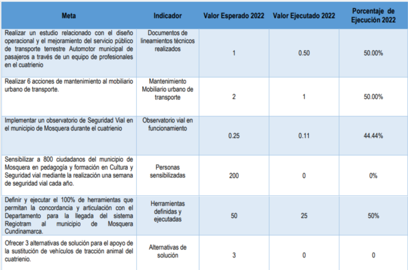
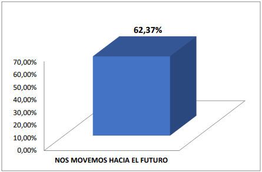

Proyecto para la mejora de la movilidad basado en la implementación de IoT en Mosquera, Cundinamarca.
El presente proyecto busca señalar y comprender las necesidades específicas del pueblo, en términos de movilidad, identificando problemáticas como las zonas de mayor congestión, horas de mayor tráfico, tramos de las vías con mayor inconvenientes de seguridad vial, entre otras. Los dispositivos IoT que planean utilizarse, son sensores de tráfico para monitorear la congestión en ciertas horas del día y cámaras de vigilancia para monitorear la seguridad vial que emitan alertas cuando se presenten problemas en las vías.
Con este proyecto se espera poder mejorar la eficiencia del transporte, monitorizando y detectando congestiones reduciendo de este modo el tráfico; y aumentar los índices de seguridad vial, detectando situaciones peligrosas como excesos de velocidad o comportamientos imprudentes.
Esta propuesta tiene como objetivo mejorar la calidad de vida de los ciudadanos mediante la implementación de tecnología y prácticas sostenibles. Se busca recopilar datos en tiempo real sobre el tráfico, la calidad del aire, el consumo de energía y otros aspectos importantes para tomar decisiones basadas en datos y mejorar la calidad de vida de los ciudadanos. Además, se busca promover el transporte sostenible, como el uso de bicicletas y transporte público, y fomentar su uso mediante la implementación de servicios de bicicletas compartidas y un sistema de transporte público eficiente y conectado. Por último, se propone la implementación de sistemas inteligentes de iluminación para reducir el consumo de energía y mejorar la seguridad en las calles. Estas iniciativas tienen como objetivo lograr una ciudad más sostenible, habitable y segura para sus habitantes.
La alcaldía de Mosquera propuso el plan “Nos MOVEMOS hacia el futuro”, cuyo objetivo es enfatizar en la relevancia del desarrollo del municipio en términos de movilidad y seguridad vial a través de la promoción de la cultura vial y la colaboración regional. Asimismo, se busca reducir los accidentes de tráfico y mejorar las condiciones de señalización e infraestructura para garantizar que los ciudadanos transiten por las vías de manera segura.
Tras una revisión exhaustiva del plan de movilidad implementado por la alcaldía de Mosquera, se pudo identificar que este ha presentado el menor cumplimiento de metas en el periodo de tiempo propuesto. En concreto, de las 11 metas que se establecieron para el año 2022, solo 5 de ellas alcanzaron una ejecución superior al 75%, lo que indica que el 54.54% de las metas no cumplieron las expectativas.
Las metas rezagadas son las siguientes:
Asimismo, se pudo determinar que el avance total del plan de movilidad se ubica en un 62.37%.
Mosquera es un municipio de Cundinamarca que ha experimentado un crecimiento demográfico significativo en los últimos años, lo que ha generado una problemática de movilidad importante en la zona. La infraestructura vial no ha sido suficiente para soportar la cantidad de vehículos que circulan en la ciudad, lo que ha generado congestiones y largos tiempos de desplazamiento en las horas pico.
Además, el transporte público en Mosquera es limitado y poco eficiente, lo que dificulta la movilización de las personas que no tienen acceso a un vehículo particular. Esto se ve reflejado en los largos tiempos de espera en las paradas de buses y en la falta de rutas que conecten de manera efectiva los diferentes sectores de la ciudad. Como resultado, la problemática de movilidad en Mosquera afecta tanto a los residentes como a las empresas y comercios que dependen del transporte para su funcionamiento.
Estos inconvenientes se tienen presentes en el plan de desarrollo vigente del municipio, sin embargo este no cuenta con programas que busquen hacer monitorizaciones constantes a las soluciones planteadas por medio de los proyectos propuestos, es por esto que nos preguntamos ¿Cómo podemos monitorear la movilidad en el municipio de Mosquera, haciendo a su vez seguimiento de los programas ya implementados con el plan de desarrollo, reduciendo el tráfico y aumentando la seguridad vial?
Implementar un sistema IoT para monitorear el tráfico y la movilidad en Mosquera, Cundinamarca, reduciendo en un 20% los tiempos de viaje en el municipio, iniciando en Enero del año 2024 y finalizando en Diciembre del mismo año.